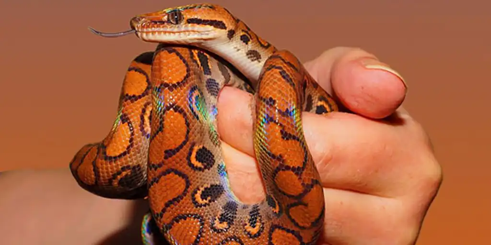

Small Rescue. Big Roars. For Modern Dinosaurs.

Adopt-a-Dino Roadmap
- Browse the Modern Dinosaurs
- Learn the Care Basics
- Chat With Rex's Home
- Habitat Check
- Adoption Approval & Fee
- Bring Your Modern Dinosaur Home
- Stay Connected
Scale-ebrations
Because Every Modern Dinosaur Deserves a Home
- Luna's Forever Home
- Luna, a Blue-Eyed Lucy, arrived severely underweight and refusing food after being surrendered. At Rex's Home, she was placed in a warm, quiet environment and slowly began eating again and regaining weight. She was adopted by Melisa a well-prepared college student. Luna is now thriving.
- Spike Basks in a New Life
- When Spike, a Bearded Dragon, came in he was weak and struggling to move. With proper care, he gradually regained strength and personality. He was adopted by the Johnson's who lovingly built a habitat after attending a care workshop, and Spike now basks and explores confidently in his new home.
- Shelly: From Container to Kingdom
- Shelly, a Red-Eared Slider, was rescued from a neglectful home, with a damaged shell. At Rex's Home, she recovered in a safe, supportive environment. She was adopted by an experienced retired couple, Lenard and Miranda with a backyard pond, and she now lives a healthy, active life as the “queen of the pond.”
3041 West Tyrannosaurus Rd.
Dinosuar, Colorado 81610
Times:Mon.-Sat.: 7am-6pm
Call us at 111-222-3333